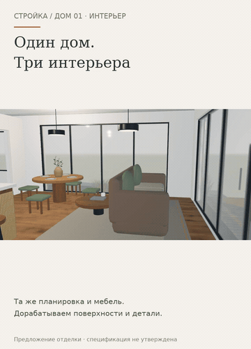

Предыдущий этап. Актуально: мебель и проходы →
Один дом — три интерьера
Гостиная, кухня, столовая и спальня в том же доме. Детали отделки, подписи и самостоятельная прогулка.
Открыть анимированную GIF-версию
Если видео не открывается — показать GIF здесь

Открыть интерактивный прототип →
Предыдущий этап: участок стены →
Монтаж настоящих экранов прототипа 16, не непрерывная запись и не замер FPS. Отделка, планировка, мебель и комплектация показаны для обсуждения. Изделия и составы не утверждены, цены не рассчитаны. Мобильный вид проверен в Chromium; физический iPhone не проверен. Рабочий сайт и сервер не менялись.